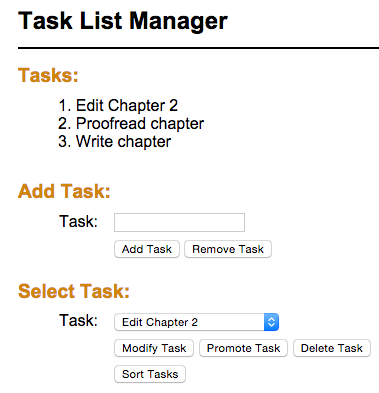

Ch. 11 Enhancement
Purpose
Each enhancement provides an opportunity to solve problems and apply the concepts covered in the current and previous topics.
Assumptions
This enhancement requires that you start where exercise 11-1 ended. It is anticipated that you will have completed the exercise on your own so that you are familiar with the application and how it operates. You can begin the enhancement by using the exercise solution code provided by the publisher, but using your own working code is encouraged.
Make a Copy
Prior to beginning the enhancement, make a copy of the finished exercise folder and paste it to a homework area in your site. Rename the pasted folder to represent the enhancement. Do all work on the enhancement in this location. Do NOT overwrite your chapter exercise doing the enhancement. Keep them separate.
Tasks
The Task List Manager application will be enhanced by adding two additional features:
- Modify the PHP for the page so the Add Task button adds the task to the top of the task list.
- After the Add Task button in the Add Task portion of the page, add a Remove Task button. The Remove Task button removes the task at the top of the list. An example of this is shown in this illustration:

Submission
- Build and test your code in the local development environment.
- Check your work to insure that it is operating correctly.
- When satisfied that the code is operational, upload the enhancement folder to the remote production server.
- Create a link from your exercises page to the index page in the enhancement folder and test that it works.
- Fully test the enhancement application for operation on the production server. Correct any errors that are found.
- When done submit the controller and view to the code submission dropbox using the directions found there.
Grading Matrix
- Add Task button adds new item to the top of the Task list: 5 points in objective 2
- Remove Task button has been added to the view: 2 points in objective 2
- Remove Task button removes the first task in the task list: 5 points in objective 2
Enhancement Value
- Objective 2: 12 points